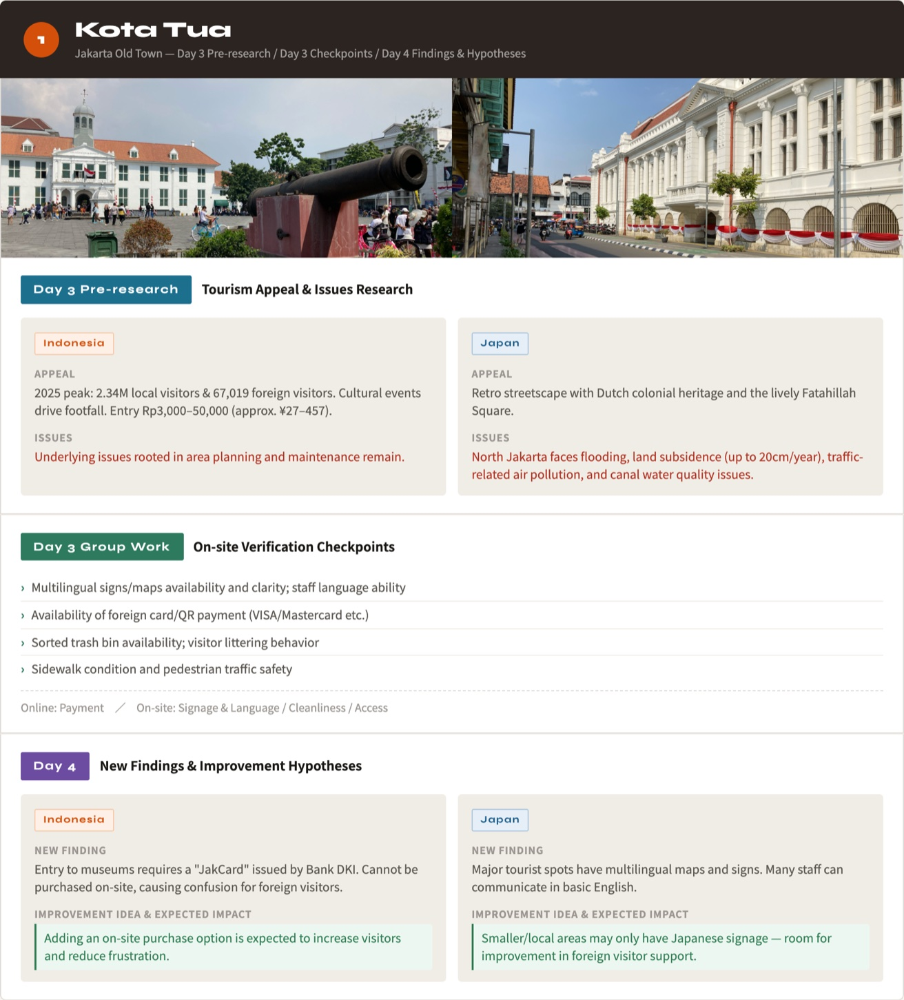
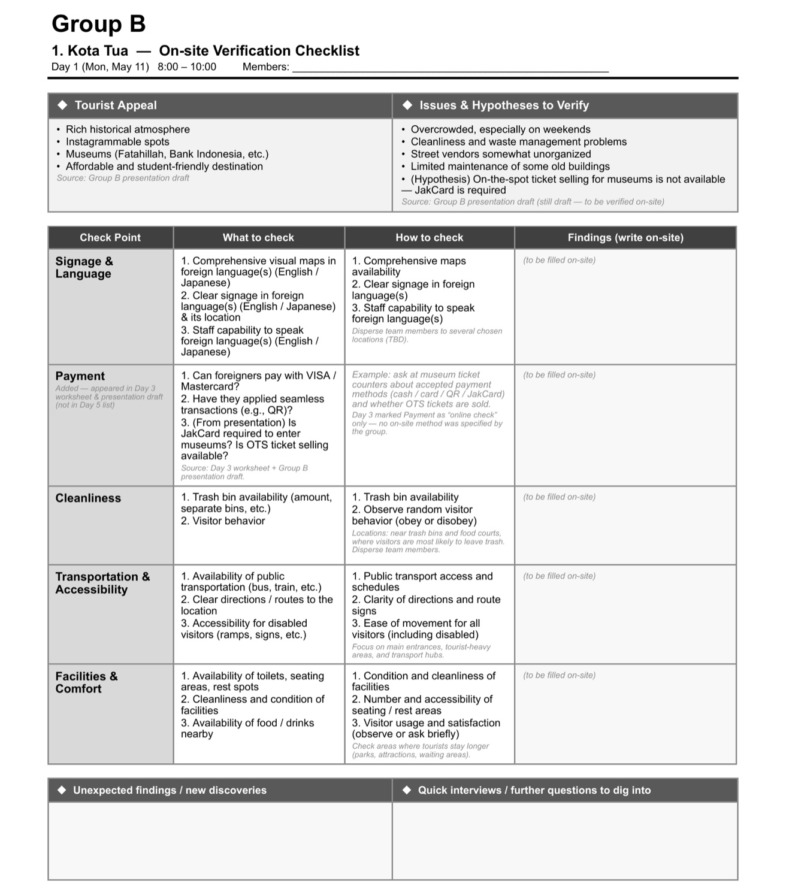
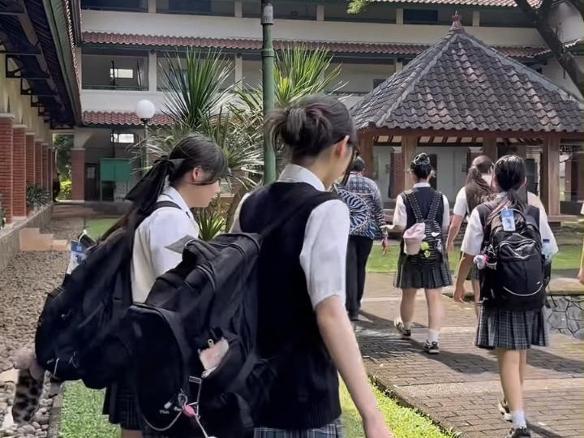
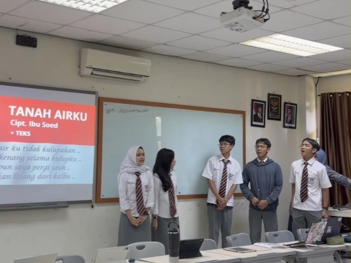
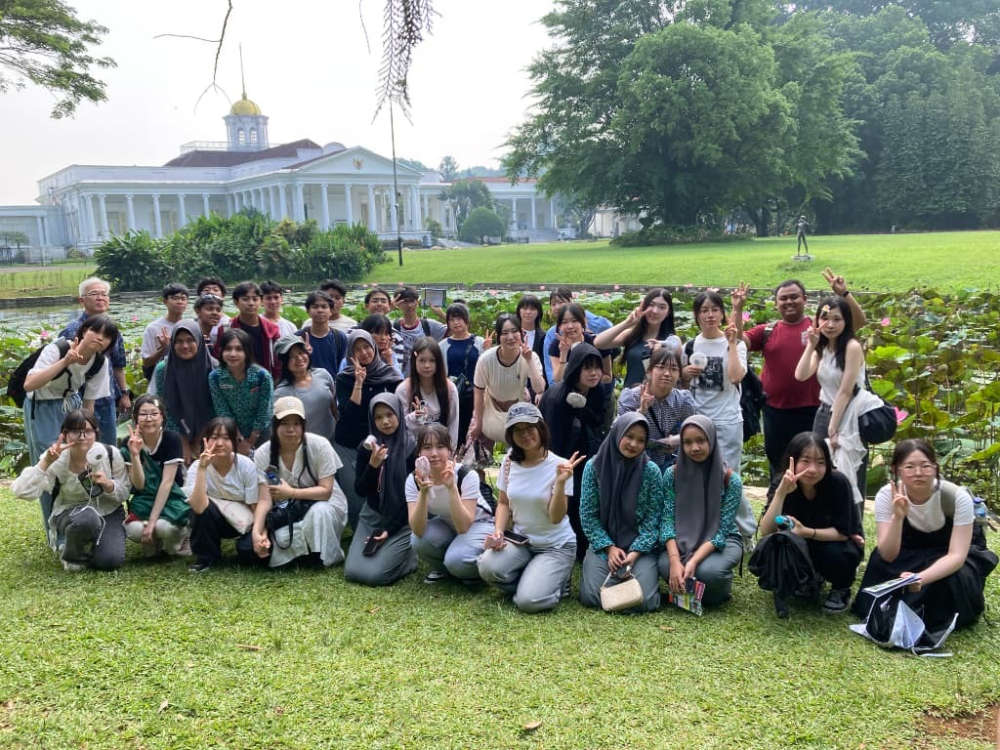
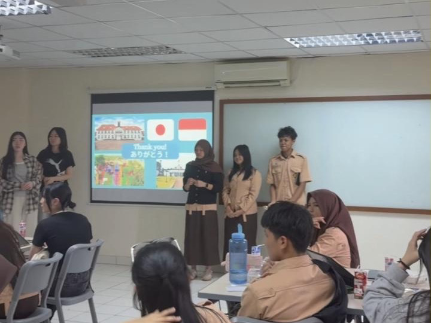
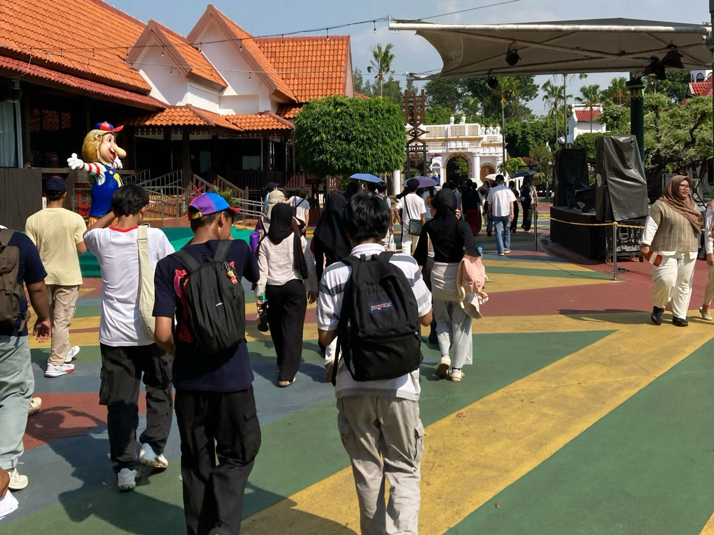

Students from Japan and Indonesia spend six months researching Jakarta's tourism together online, then explore the city side by side and present ideas for improvement
In the Discover Jakarta Project, 25 Grade 10–11 students from Tokyo Joshi Gakuen Junior and Senior High School (now Shiba Kokusai Junior and Senior High School) in Tokyo and 21 students from SMA Dwiwarna in Bogor, Indonesia, worked together in seven mixed teams. From October 2025, they met online once a month to research the appeal and challenges of tourist sites in Jakarta and to form hypotheses for improvement. In May 2026, 18 of the Japanese students traveled to Indonesia. For four days, students from both schools explored the sites together, and on the final day they presented their ideas for improvement in English.
This English edition is based on the Japanese version of this case study.
In cooperation with
Tokyo, Japan
Tokyo Joshi Gakuen Junior and Senior High School
(now Shiba Kokusai Junior and Senior High School)
Grades 10–11, 25 students
(18 traveled to Indonesia)
+ 4 days on site 2-hour time difference
Bogor, Indonesia
SMA Dwiwarna
Grade 10, 21 students


- Project
- Discover Jakarta Project (ジャカルタ観光・魅力探究プロジェクト)
- Schools
- Tokyo Joshi Gakuen Junior and Senior High School (now Shiba Kokusai Junior and Senior High School), Tokyo, Japan
SMA Dwiwarna, Bogor, Indonesia (a boarding senior high school in Greater Jakarta) - Dates
- October 2025 – May 2026
Online: October 30, 2025 – April 30, 2026 (6 sessions, Thursdays 14:20–15:10 Japan time / 12:20–13:10 Jakarta time)
On site: May 11–14, 2026 (4 days) - Participants
- Japan: 25 students (18 traveled to Indonesia)
Indonesia: 21 students
7 mixed teams - Sites visited
- Kota Tua (Jakarta Old Town), Ancol Dreamland (Dufan), Bogor Palace (Istana Bogor) and Bogor Botanical Gardens (Kebun Raya Bogor), SMA Dwiwarna
- Format
- Online + on site
- Tools
- Zoom (breakout rooms), Padlet, Google Slides (team worksheets), Canva (presentation slides)
Background
Tokyo Joshi Gakuen and SMA Dwiwarna had already connected online through AirPangaea's TOMODACHI Program in the 2023 and 2024 school years, as part of Tokyo Joshi Gakuen's DSDA* classes. In the 2025 school year, the two schools took this exchange a step further: students would think through questions together online, then visit the sites in person to check their ideas.
*DSDA (Data Science, Design & Arts) is an original information and inquiry-based learning curriculum that Tokyo Joshi Gakuen Junior and Senior High School (Minato, Tokyo) has offered since the 2020 school year.
The theme was discovering the appeal of Jakarta as a tourist destination. Jakarta is a major city on the scale of Tokyo, yet as a destination in Indonesia it is often said to leave a weaker impression than Bali or Borobudur. Students from Japan and Indonesia set out to find the city's appeal through their own eyes as high school students, and to think together about how to make it a place more people want to visit.
SMA Dwiwarna is a boarding senior high school in Bogor, Greater Jakarta. Its students come from all over Indonesia and live in dormitories, so they are not necessarily familiar with Jakarta's tourist sites either. Rather than one side acting as guides for the other, students from both countries could approach the city as researchers on equal footing. At SMA Dwiwarna's suggestion, the sites to visit included not only tourist sites in Jakarta but also Bogor Palace and the Bogor Botanical Gardens, close to the school.
What we did
Forming teams and collaborating online (6 sessions)
We formed seven mixed teams of six to seven students each: three to four from Japan and three from Indonesia. Each session took place on Thursday afternoons (14:20–15:10 Japan time, 12:20–13:10 Jakarta time), and the Japanese students used the class period before each session to prepare.
Each mixed team shared a worksheet in Google Slides. The worksheet set out in advance what to discuss and what to fill in at each session. Students from both countries researched and wrote their parts beforehand, then explained them to one another in English while sharing their screens.
-
Day 1
Team building (October 30, 2025)
The first meeting. Students had one-on-one conversations with two different partners, then got to know one another through team games: finding things in common, and searching their surroundings for the oldest object they could find to show the others.
-
Day 2
Narrowing down sites (November 27)
Students from both countries posted places they wanted to visit in Jakarta or Bogor, with photos, on an online board (Padlet), and each team narrowed them down to three. Based on the teams' preferences, the four sites that everyone would visit were decided in consultation with the teachers and the travel company.
-
Day 3
Learning about appeal and challenges (January 29, 2026)
For the four sites, students researched and shared who each site appeals to and why, and what challenges exist and how serious they are, adding figures and sources wherever possible. They then chose three to five points to check on site for each location, such as access, crowding, signage and language, payment methods, safety and cleanliness, and photo spots.
-
Day 4
Forming hypotheses for improvement (February 12)
Based on what they had found for each point, students exchanged ideas for making the sites more appealing and easier to visit, thought through how much each idea could improve things, and turned them into hypotheses they could check on site.
-
Day 5
Building on-site checklists (April 16)
For each site, students organized what to check and how, laying the groundwork for the checklists they would use on site.
-
Day 6
Drafting presentations (April 30)
Teams co-edited their presentation slides in Canva and went through them one slide at a time. The spaces for on-site findings were left blank, ready to be filled in Indonesia.
Days 1 and 2 centered on activities that were easy to enjoy, such as games and introducing places students wanted to visit. From Day 3, the sessions turned into discussions: explaining one's research in English, listening to the other side's explanation, and bringing the two together. Reaching a shared conclusion in English, through a screen, while checking each other's thinking is not easy, and many teams found it hard. Yet working online with partners in another country is becoming an ordinary part of the world these students will enter. AirPangaea saw value in working through that difficulty itself, and focused on supporting teams where they got stuck.
Before Day 5, many teams had not yet filled in the checkpoint sections. We therefore prepared, in Japanese and English, a summary of one team's worksheet organized by site, together with a sample checklist, and told students that even if the sections were incomplete, what mattered was thinking about which points would let them check the challenges and their ideas for improvement. So that each team would write from its own discussions, students added the initials of whoever wrote each entry. By the end of the online sessions, every team had gradually begun to picture what they themselves would check on site.
During the online period, we also held a special session (February 26) with guests including a teacher from Indonesia, an international student working with AirPangaea, and a local university student, who talked in Japanese about life in Jakarta and the highlights of the sites to be visited.


Four days on site (May 11–14, 2026)
*Videos from the four days on site are also available in the “ジャカルタ探究 (Jakarta Inquiry)” highlight on AirPangaea's Instagram .
.
-
Day 1
Exploring tourist sites in Jakarta (May 11)
In the morning, at Kota Tua, Jakarta's old town, students met their teammates in person for the first time after six months of talking online. Even though they already knew each other from the screen, they seemed a little nervous at first, but as they walked around together with their checksheets in hand, the conversation picked up. Students from both schools traveled together on the same bus all day. At Ancol Dreamland (Dufan), each team carried out three hours of fieldwork, accompanied by one teacher. Taman Mini Indonesia Indah (TMII) had also been planned, but some students were tired from the strong sun, so after consulting with the teachers we put safety first and viewed it only from the bus.


Left: Students from both schools meeting in person for the first time at Kota Tua Right: Filling in the on-site checksheets

-
Day 2
A day at SMA Dwiwarna (May 12)
The atmosphere was more relaxed than the day before. For the Japanese students, it was a day to see up close the school life of peers who live in dormitories; for the SMA Dwiwarna students, a day to welcome their teammates to their own school. After greetings from the principal and vice principal, the Japanese students toured the campus and split up to join three classes taught in English. In the collaborative session, each team shared what they had noticed during the previous day's fieldwork, decided what to add to their presentations, and built the framework (title, structure, and roles) for the parts of the presentation other than Bogor.


Left: Japanese students touring the SMA Dwiwarna campus Right: Joining a class
-
Day 3
Bogor Palace and Botanical Gardens (May 13)
In the morning, students from both schools walked around Bogor Palace and the Bogor Botanical Gardens, near the school. They then explored a local AEON Mall and had lunch in their teams before returning to school to finish their presentations. Growing closer by the day, students from both countries shared ideas and divided up the work. Their task before the next day: finish their own part and rehearse it three times.


Left: In front of Bogor Palace Right: Students from both schools preparing their presentations
-
Day 4
Final presentations and farewell (May 14)
The seven teams presented in English (10 minutes per team, plus 2 minutes for questions). For each presentation, another team was assigned as discussant, and students in the audience asked questions. The owner of a Jakarta-based travel company, invited as a guest, gave feedback, and after remarks from the principal of SMA Dwiwarna, the two schools took a group photo. Finally, each team had lunch together, and the SMA Dwiwarna students saw the Japanese students off at the school entrance. More than a few teams shed tears as they said goodbye.


Left: Students from both schools giving their final presentation Right: A Japanese student asking a question
What the students thought about
Each of the seven teams structured its presentation in the same way: team introduction, similarities and differences found in everyday conversation, the appeal and challenges of each site, hypotheses, findings and proposals, and conclusion.
Similarities and differences found in everyday conversation
Many teams named valuing family and rice as a staple food as things the two countries share. Differences included how people spend their weekends, flavors and ways of eating, whether or not there are four seasons, praying five times a day and Ramadan, sorting garbage, and the custom of using water rather than toilet paper.
What they researched online and the hypotheses they formed
During the six months online, every team researched visitor numbers, prices, and reviews for the sites, and identified challenges such as crowding and traffic on weekends and holidays, aging buildings and facilities, litter and cleanliness, and signage that is hard for international visitors to follow. One team found that the museums in Kota Tua could not be entered without a prepaid card (JakCard) and did not sell tickets at the counter, and proposed keeping a same-day ticket counter for international travelers.
What they noticed walking the sites
Walking the same places together, students from both countries kept discovering how differently they saw them. Scenes that were everyday for the Indonesian students surprised the Japanese students, and seeing those reactions, the Indonesian students in turn realized, “So this is how visitors from Japan see it.” For the Japanese students, it was a series of moments in which what they took for granted at home did not apply.


Left: A wooden bridge in Kota Tua with some broken boards Right: A team walking through the large grounds of Ancol Dreamland (Dufan)
- The strong sun and heat were exhausting. Theme parks in Japan have deliberate measures against the heat, such as shade over queues and water mist
- The large park had no paper map, so it was hard to tell where things were. Signs were available in English, but not in other languages
- Most visitors were Indonesian; international tourists were still few
- Restrooms had no toilet paper, and floors and seats were wet, natural where water is used instead of paper, but unfamiliar to visitors from Japan
- Some boards on a wooden bridge were broken, making it unsafe to walk on
One team compared each site “before” and “after” their visit on two slides: they had expected crowds and litter, but what actually confused them was the shortage of English signage and maps. At the broken boards of the wooden bridge, students from both countries agreed that it was not acceptable for a tourist site.
Proposals for improvement
The presentations included proposals such as:
- Measures against the heat, such as shade over queues, cool indoor rest areas, and water stations
- Multilingual paper maps and brochures, clearer signage, and explanations available via QR codes
- Online booking and information on peak times
- More cleaning staff and trash bins, and repairs to damaged walkways and facilities
- Better organization of street vendors, and promoting the sites' appeal on social media


Feedback from the guest
For the final presentations, we invited the owner of a Jakarta-based travel company as a guest to give feedback. Drawing on his own experience of visiting Japan, he spoke about the value of an outsider's perspective. Seeing Japan's packed commuter trains, he had felt that something should be done about them, while people in Japan accepted them as a matter of course. Things that locals rarely notice can become visible through the eyes of visitors. He also praised the Indonesian students' views as fresh perspectives that only high school students could offer.
He then set the next challenge: “In real business, it is important to think quantitatively. Think about how you create a flow of people, bring them in, reach their hearts, and how much impact you make.” He praised the teams that had backed their analysis with numbers, and questioned whether a proposal to add more Japanese-language signs would be worth its cost. As the feedback was given in English, AirPangaea summarized the key points in Japanese.
A Teacher's Perspective

Tokyo Joshi Gakuen Junior and Senior High School (now Shiba Kokusai Junior and Senior High School)
English Teacher / Coordinator of inquiry-based learning Hiroshi Karasawa
In inquiry-based learning, what matters most to me is not only gaining knowledge but how we build a structure in which students investigate, discuss, and verify things for themselves. In this project, students researched together with their Indonesian counterparts online for six months and formed hypotheses, then checked them with their own eyes on site, and finally presented in English. They experienced all of it as one continuous flow.
Tourism seemed like an easy topic at first, but English is not the first language of either side, and communication that had been difficult through online exchange alone changed when the students met in person. They could share and feel not only differences in values but also ideas they held in common. I think it became a new kind of cross-cultural exchange.
Facing questions that students cannot encounter in the classroom, together with friends overseas: I feel that this experience itself became a great opportunity for learning.
Roles of AirPangaea and the teachers
What AirPangaea handled
- Coordinating the project with the partner school in Indonesia
- Designing the theme and the learning flow of six online sessions and four days on site
- Creating the team worksheets and presentation templates
- Using generative AI to organize each team's checkpoints and research to date into a team-specific on-site checklist
- Facilitating the online sessions and providing language support
- Facilitating the on-site collaborative sessions and the final presentations, and arranging the guest
- Explaining the program at parent information sessions
What we asked the teachers to do
- Selecting students and forming teams (JP/ID)
- Securing class time, and supporting preparation and reflection before and after each session (JP/ID)
- Coordinating within the school (JP/ID), incorporating the program into the school trip (JP), and preparing to host the visiting students and supporting them on campus (ID)
- Preparing and holding parent information sessions, and building parents' understanding (JP)
- Accompanying students on site and making decisions on the itinerary, and looking after each team during fieldwork (JP/ID)
JP: Tokyo Joshi Gakuen ID: SMA Dwiwarna
The travel company arranged the itinerary, accommodation, and transportation, and activities on site were coordinated among four parties: Tokyo Joshi Gakuen, the travel company, SMA Dwiwarna, and AirPangaea.
Challenges
Deepening research and turning it into proposals
During the online period, it was also challenging to go beyond collecting information, to deepen the analysis, and to turn it into concrete proposals.
To deepen learning within limited class and preparation time, students need not only opportunities to discuss online, but also preparation time at school and an environment in which each team can keep developing its research and discussions. AirPangaea will keep working with teachers to find better ways to support this.
From the online stage, the program asked students to research with figures and sources, but only some teams were able to carry those figures through to thinking about the scale of a challenge or the effect of a proposal. Building on the guest's advice to think quantitatively, we will build more concrete steps for reasoning with numbers into the online stage.
Keeping the on-site itinerary flexible
During fieldwork, we needed to consider not only whether the planned sites could be covered in time, but also the heat and students' fatigue. This time, based on the situation on the day, we consulted with the teachers and changed the visit to TMII to viewing from the bus, putting safety first.
In planning future itineraries, we will set priorities among the sites and keep the way of visiting them flexible, depending on the weather and how students are doing.
Contact us
If you have any questions about this case study or AirPangaea's programs, please feel free to contact us.
Contact us